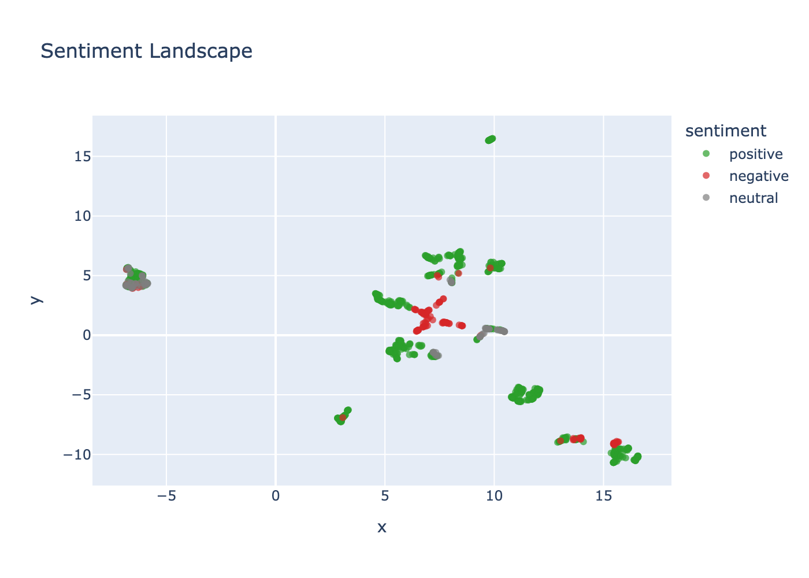
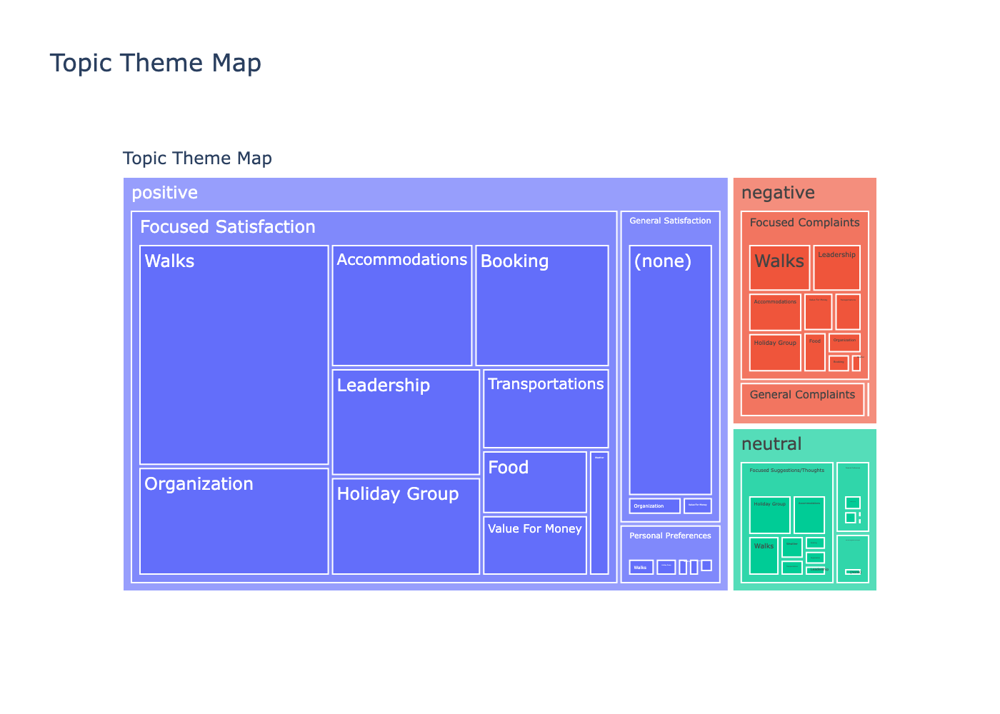
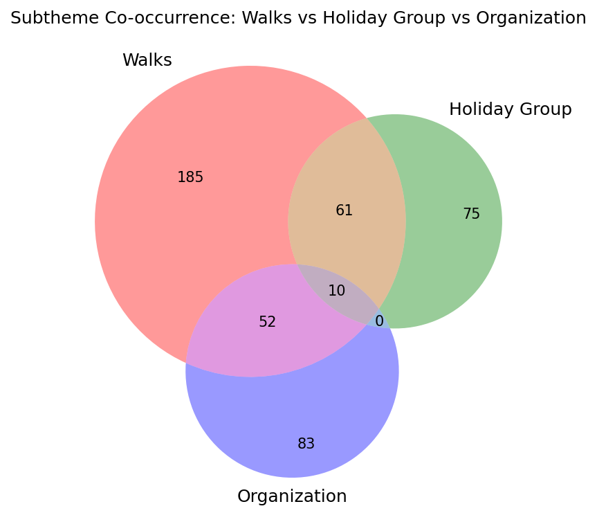

Spike Insight · via University of Sussex RISE Programme
Customer Review Topic, Theme & Sentiment Analysis
Completed · 2023The Project
Context & Objectives
In early 2023, I worked with Spike Insight and my PhD supervisor Dr Julie Weeds through the University of Sussex's RISE programme (Research and Innovation in Sussex Excellence — a Universities of Sussex and Brighton scheme that pairs SMEs with academic researchers for funded, research-led innovation support).
Spike Insight provided a dataset of customer reviews for Ramblers Holidays, a guided-walking-holiday operator — each review pairing free-text feedback with a numeric recommendation score. The brief was to apply NLP to surface the themes and sentiment patterns behind those scores, and identify what was actually driving satisfaction, dissatisfaction, and the likelihood of a customer rebooking.
My Role
Contributions
I designed and built the end-to-end pipeline — data cleaning, topic modelling, thematic annotation, an iterative correction stage, and the final landscape and quantitative analysis — and co-authored the final report with Dr Julie Weeds, who provided methodological supervision throughout.
A central part of the work was diagnosing why the initial topic-theme map under-performed — particularly on the large outlier cluster BERTopic left unassigned — and designing a correction layer that took the evaluation scores from workable to strong without re-annotating from scratch.
Scope
Project Scope
- Reviews analysed: 13,145 raw → 11,196 after cleaning → 10,767 in the final labelled dataset
- Embedding model: all-mpnet-base-v2 (sentence-transformers)
- Topic modelling: BERTopic (UMAP + HDBSCAN) → 136 topics plus 1 outlier cluster
- Themes: 9 top-level themes, ~10 keyword-defined subthemes
- Correction model: facebook/bart-large-mnli (zero-shot NLI)
- Evaluation: 250-review manually annotated benchmark, macro-F1 across sentiment, theme and subtheme
- Engagement: University of Sussex RISE programme, with Dr Julie Weeds (UoS), Spring 2023
Method
Analysis Pipeline
Phase 1 — Data Cleansing: 13,145 raw reviews were checked for empty and duplicate entries, leaving 11,196 reviews (a 15% reduction) for analysis.
Phase 2 — Topic Modelling: the cleaned reviews were embedded with all-mpnet-base-v2 and clustered with BERTopic (UMAP dimensionality reduction + HDBSCAN density clustering), surfacing 136 distinct topics plus a residual outlier cluster (-1) for reviews that didn't fit any topic cleanly.
Phase 3 — Thematic Annotation: 10 reviews per topic were sampled and labelled for sentiment (positive / negative / neutral) following the same logic as the granular annotation scheme used elsewhere in this portfolio. Topics were then grouped into 9 top-level themes to build a topic–theme map. Evaluated against the 250-review benchmark (macro-F1 evaluation), this initial map scored 0.79 (sentiment), 0.69 (theme) and 0.70 (subtheme).
Phase 4 — Correction Layer: the outlier cluster alone accounted for roughly 45% of reviews — too large and too heterogeneous to map to a single theme (see handling the outlier cluster). These reviews were reassigned to their nearest semantic cluster, overlapping themes were merged, and a small number of noise topics were dropped, bringing the dataset to its final 10,767 reviews across 136 topics. A correction layer was then built combining zero-shot NLI classification (facebook/bart-large-mnli) for sentiment and theme with keyword-based classifiers for the 10 subthemes — distinguishing "focused" reviews (a single dominant subject) from "general" ones (broad commentary across several).
Phase 5 — Re-evaluation & Landscape Analysis: re-run against the same 250-review benchmark, macro-F1 rose to 0.91 (sentiment), 0.95 (theme) and 0.85 (subtheme). The final labelled dataset was projected into 2D with UMAP and visualised as a sentiment/theme/score-coloured landscape, alongside quantitative breakdowns of sentiment, score and theme distributions.
Outcomes
Results & Impact
Delivered a final dataset of 10,767 reviews labelled by sentiment, theme and subtheme to Spike Insight, alongside the topic–theme map and a set of UMAP landscape visualisations.
Overall sentiment was strongly positive — 78% positive, 14% neutral, 8% negative — consistent with the score distribution, where roughly 80% of reviews scored 8 or above out of 10.
Just over half of all reviews (51%) expressed "focused satisfaction" on a single subject. Within that group, the leading drivers were trip organisation (27%), tour leadership (21%), accommodation (15%) and the walks themselves (14%). A smaller pool of focused complaints (5.8% of all reviews) clustered around leadership (20%), accommodation (20%), walks (15%), food (13%) and organisation (12%) — giving Spike Insight a concrete, evidence-based view of where operational changes were most likely to move customer satisfaction and rebooking.
Correction Layer — Evaluation Impact
Both topic-theme maps were scored against the same 250-review manually annotated benchmark. The correction layer — outlier reassignment, theme merging, and zero-shot NLI + keyword subtheme classifiers — drove a substantial improvement across all three dimensions.
| Evaluation (macro-F1) | Initial Topic-Theme Map | After Correction Layer |
|---|---|---|
| Sentiment | 0.79 | 0.91 |
| Theme | 0.69 | 0.95 |
| Subtheme | 0.70 | 0.85 |
Key Findings
Overall Sentiment & Scores
78% of reviews were sentiment-positive, 14% neutral and 8% negative — consistent with the score distribution, where around 80% of reviews scored 8 or above (out of 10) and roughly 60% scored 9–10.
Focused Satisfaction (51% of reviews)
Reviews expressing satisfaction with a single dominant subject. Leading drivers: organisation (27%), tour leadership (21%), accommodation (15%), and the walks (14%).
Focused Complaints (5.8% of reviews)
A smaller pool of reviews expressing dissatisfaction with a single dominant subject. Leading drivers: tour leadership (20%), accommodation (20%), the walks (15%), food (13%), and organisation (12%).
Landscape & Distribution
Illustrative figures from a synthetic reproduction of the pipeline — same method and figure types as the real project, generated from synthetic review data rather than the real dataset.

Sentiment Landscape — 2D UMAP projection of reviews, coloured by sentiment.

Topic-Theme Map — sentiment → theme → subtheme breakdown.

Subtheme Co-occurrence — overlap between the most common subthemes.